Ancient (before 500 AD)
- Similar Triangles and Measurement
 Thales of Miletus
c. 624 BC
Thales of Miletus
c. 624 BC
- The Pythagorean Theorem
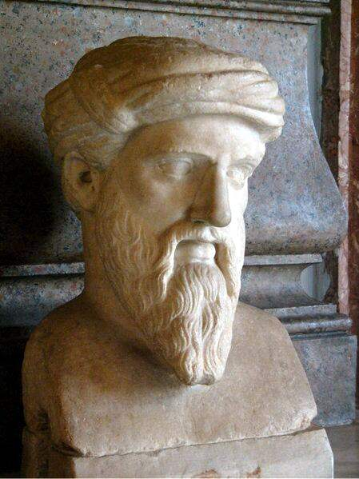
Pythagoras c. 570 BC- Square Root of 2 is Irrational
 Hippasus
c. 530 BC
Hippasus
c. 530 BC
- Square Root of 2 is Irrational
- Dense Subsets
 Eudoxus of Cnidus
c. 408 BC
Eudoxus of Cnidus
c. 408 BC
- Similar Triangles
- The Pythagorean Theorem
- Divisibility and the Euclidean Algorithm
- Prime Numbers
 Euclid
c. 325 BC
Euclid
c. 325 BC
- The Squeeze Theorem
- The Riemann Integral
- Multiple Integrals
 Archimedes
c. 287 BC
Archimedes
c. 287 BC
- Prime Numbers
 Eratosthenes
c. 276 BC
Eratosthenes
c. 276 BC
- Trigonometry from Scratch
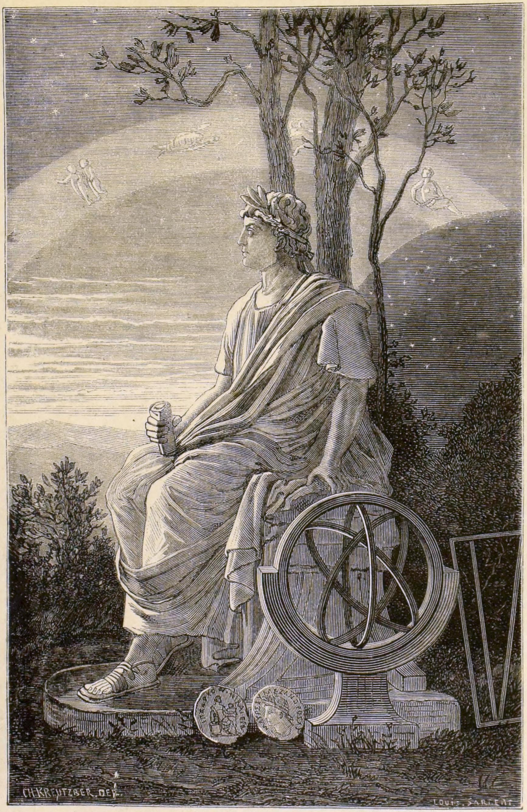
Hipparchus c. 190 BC- Trigonometry from Scratch
 Claudius Ptolemy
c. 100
Claudius Ptolemy
c. 100
- Diophantine Equations
 Diophantus
c. 210
Diophantus
c. 210
- The Chinese Remainder Theorem
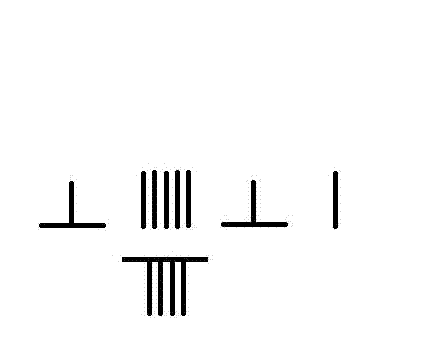
Sunzi c. 300- Trigonometry from Scratch
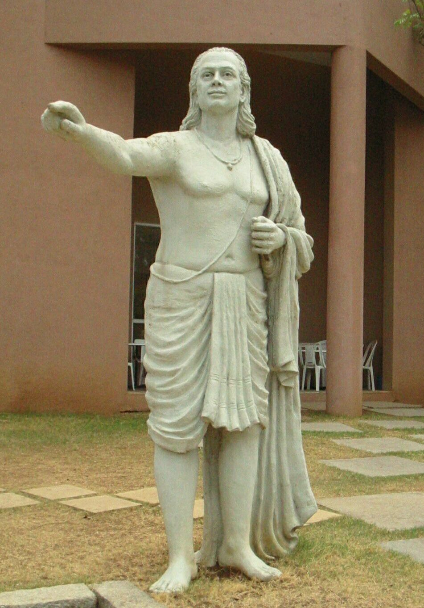
Aryabhata 476Medieval (500–1500)
- The Pythagorean Theorem
 Bhaskara II
1114
Bhaskara II
1114
- Abel's Theorem
 Madhava of Sangamagrama
c. 1350
Madhava of Sangamagrama
c. 1350
Renaissance (1500–1650)
- Cubic formula (Cardano's formula)
 Gerolamo Cardano
1501
Gerolamo Cardano
1501
- Quartic formula
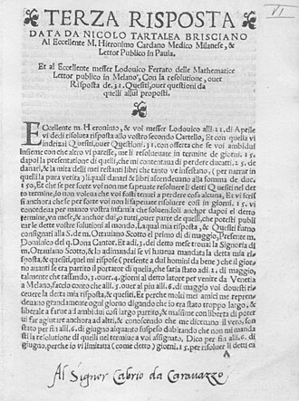
Lodovico Ferrari 1522- Bézout's identity
 Claude Gaspard Bachet de Méziriac
1581
Claude Gaspard Bachet de Méziriac
1581
- Coordinate geometry (Cartesian plane)
 René Descartes
1596
René Descartes
1596
- Fermat's little theorem
- Fermat's theorem on stationary points
- Method of adequality (proto-derivative)
- Probability correspondence with Pascal (1654)
 Pierre de Fermat
1601
Pierre de Fermat
1601
- Probability correspondence with Fermat (1654)
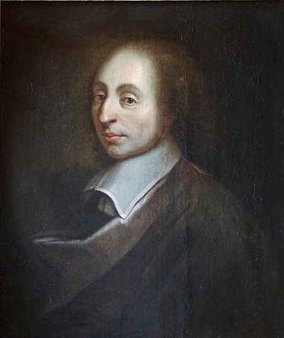
Blaise Pascal 1623- Parseval's Theorem
 Pietro Mengoli
1626
Pietro Mengoli
1626
- Expected value (De Ratiociniis, 1657)
 Christiaan Huygens
1629
Christiaan Huygens
1629
- Taylor series instances (1668)
- Leibniz–Gregory series for $\arctan$
 James Gregory
1638
James Gregory
1638
- Co-inventor of calculus (fluxions)
- Fundamental theorem of calculus (co-discoverer)
- Infinite-polynomial programme (1660s)
- Power series methods
 Isaac Newton
1643
Isaac Newton
1643
- Co-inventor of calculus, $dy/dx$ notation
- Product rule (1684)
- Fundamental theorem of calculus (co-discoverer)
- Leibniz–Gregory series for $\arctan$
 Gottfried Wilhelm Leibniz
1646
Gottfried Wilhelm Leibniz
1646
Early Modern (1650–1800)
- Compound interest limit $(1+1/n)^n \to e$
- Weak law of large numbers
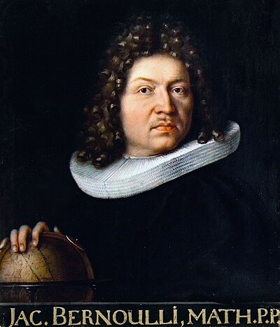
Jacob Bernoulli 1655- Concept of variance (deviation from the mean)
- De Moivre–Laplace theorem (first CLT)
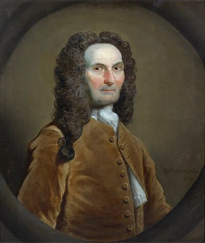
Abraham de Moivre 1667- L'Hôpital's rule (actual discoverer)
- Bernoulli equations
- Brachistochrone problem
 Johann Bernoulli
1667
Johann Bernoulli
1667
- Taylor's theorem (polynomial approximation with remainder)
 Brook Taylor
1685
Brook Taylor
1685
- Maclaurin series (Taylor series at $a = 0$)
 Colin Maclaurin
1698
Colin Maclaurin
1698
- St. Petersburg paradox and expected utility
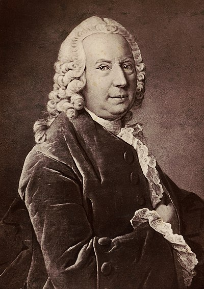
Daniel Bernoulli 1700- Bayes’ theorem
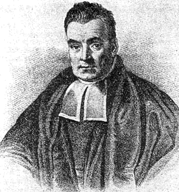
Thomas Bayes 1701- Cramer's rule
 Gabriel Cramer
1704
Gabriel Cramer
1704
- Unit circle definition of trigonometric functions
- First published proof of Fermat's little theorem
- Euler's totient function and theorem
- Power series convergence
 Leonhard Euler
1707
Leonhard Euler
1707
- Clairaut–Schwarz theorem
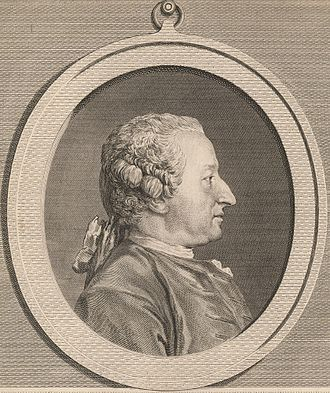
Alexis-Claude Clairaut 1713- Ratio test (d'Alembert's test)
- Radius of convergence via ratio test
- Complex roots of characteristic polynomial
- Attempted proof of the Fundamental Theorem of Algebra
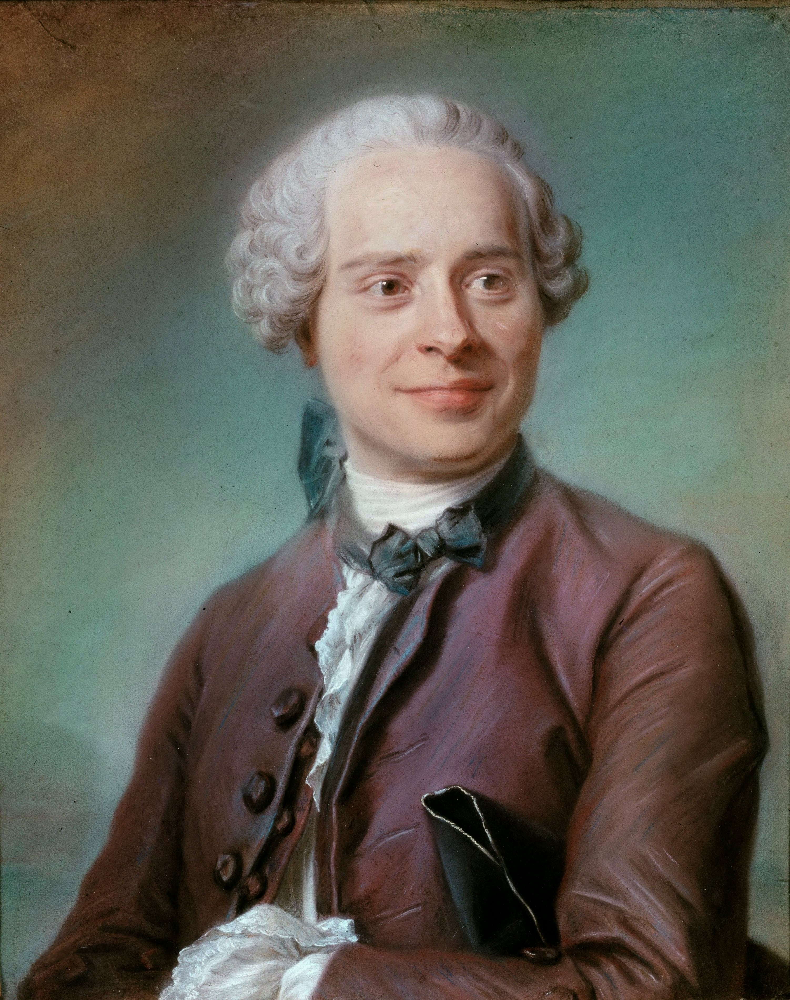
Jean le Rond d'Alembert 1717- Mean Value Theorem
- Lagrange form of the Taylor remainder
- Lagrange multipliers
- Variation of parameters
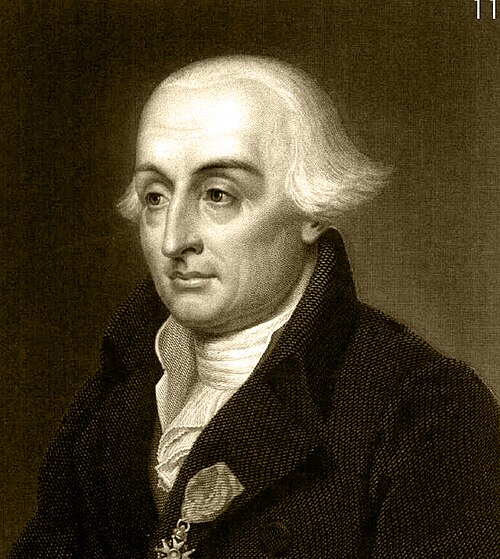
Joseph-Louis Lagrange 1736- Laplace expansion of determinants
- Bayesian probability (independent discovery)
- De Moivre-Laplace theorem and the CLT
 Pierre-Simon Laplace
1749
Pierre-Simon Laplace
1749
- Method of least squares (independent discovery)
- Introduced the $\partial$ notation for partial derivatives
 Adrien-Marie Legendre
1752
Adrien-Marie Legendre
1752
- Abel-Ruffini theorem: attempted proof of quintic impossibility (1799)
- Fourier series decomposition
- Convergence of Fourier series
- Parseval's theorem (energy conservation)
- Gibbs phenomenon at discontinuities
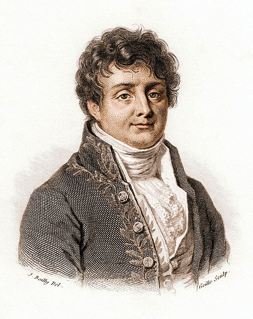
Joseph Fourier 1768- The Wronskian determinant
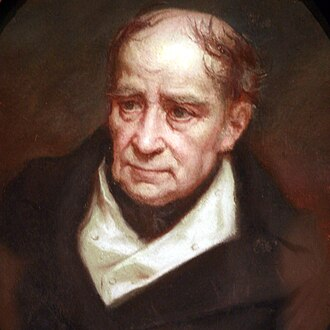
Józef Hoene-Wroński 1776- Fundamental Theorem of Arithmetic (rigorous proof)
- Modular arithmetic (Disquisitiones Arithmeticae)
- Gaussian elimination
- Least squares (orbit of Ceres)
 Carl Friedrich Gauss
1777
Carl Friedrich Gauss
1777
- Bolzano-Weierstrass theorem
- First rigorous proof of the Intermediate Value Theorem
- Bolzano-Weierstrass in metric spaces
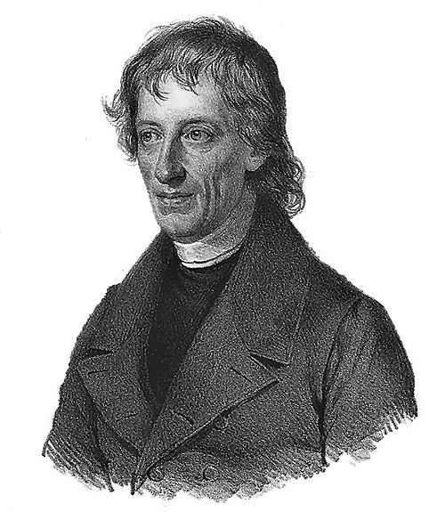
Bernard Bolzano 1781- Formalisation of limits
- Cauchy criterion for convergence
- Integral form of Taylor remainder
- Cauchy-Hadamard formula for radius of convergence
 Augustin-Louis Cauchy
1789
Augustin-Louis Cauchy
1789
- Green's theorem (1828)
 George Green
1793
George Green
1793
- Bienaymé–Chebyshev inequality
 Irénée-Jules Bienaymé
1796
Irénée-Jules Bienaymé
1796
19th Century (1800–1900)
- Abel's theorem on power series at the boundary
- Abel summability
- Noticed Cauchy's error on limits of continuous functions
- Abel's identity for the Wronskian
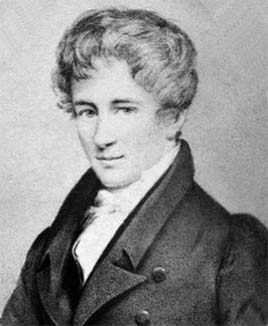
Niels Henrik Abel 1802- Dirichlet function (non-integrable example)
- Absolute convergence preserves sum under rearrangement
- Uniform continuity ideas
- Dirichlet's convergence theorem for Fourier series (1829)
 Peter Gustav Lejeune Dirichlet
1805
Peter Gustav Lejeune Dirichlet
1805
- Abstract vector spaces (1844)
- Inner product / dot product
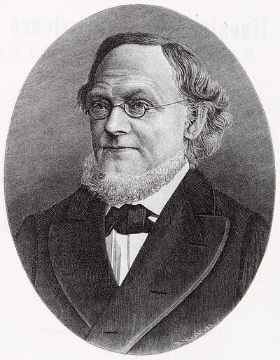
Hermann Grassmann 1809- Publication of Galois’s manuscripts
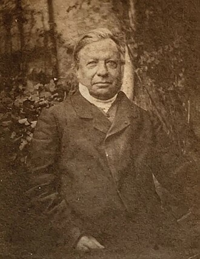
Joseph Liouville 1809- Coined the term "group" (groupe)
- Group structure of permutations
- Galois theory: solvability by radicals iff Galois group is solvable
 Évariste Galois
1811
Évariste Galois
1811
- Coined the term "totient"
- Rank-nullity theorem
- Coined "eigenvalue" terminology
- Invariants of bilinear forms
 James Joseph Sylvester
1814
James Joseph Sylvester
1814
- Rigourisation of limits
- Bolzano–Weierstrass theorem
- Epsilon-delta definition of derivative
- Power series and radius of convergence
 Karl Weierstrass
1815
Karl Weierstrass
1815
- Uniform convergence (1848)
- Stokes' theorem
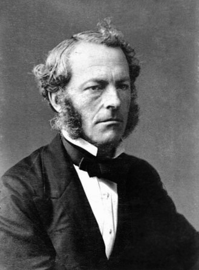
George Gabriel Stokes 1819- Matrix algebra
- The Cayley–Hamilton theorem
- Abstract group definition
- Cayley's theorem (every group embeds in a symmetric group)
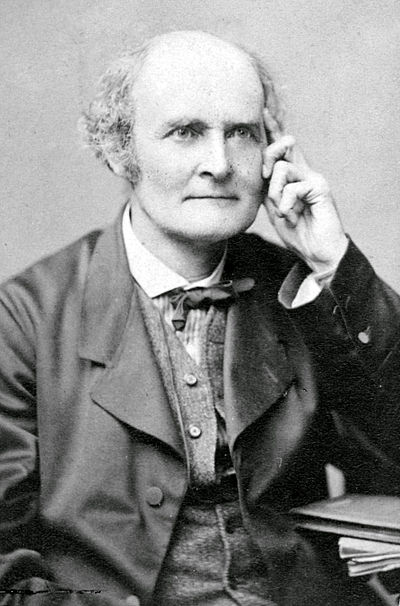
Arthur Cayley 1821- Chebyshev's inequality
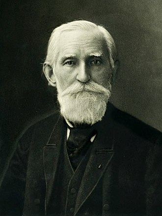
Pafnuty Chebyshev 1821- Heine's theorem (uniform continuity on closed intervals)
- Heine–Borel theorem
- Heine's theorem (generalised to compact metric spaces)
- Norm equivalence in finite dimensions
 Eduard Heine
1821
Eduard Heine
1821
- Spectral theorem for Hermitian matrices
- Hermitian matrices and the spectral theorem
 Charles Hermite
1822
Charles Hermite
1822
- Eisenstein's irreducibility criterion
 Gotthold Eisenstein
1823
Gotthold Eisenstein
1823
- Classification of finite abelian groups
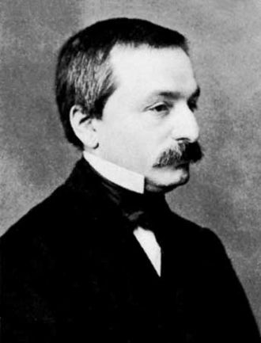
Leopold Kronecker 1823- The Riemann integral (1854)
- Riemann rearrangement theorem (1853)
- Riemann–Lebesgue lemma
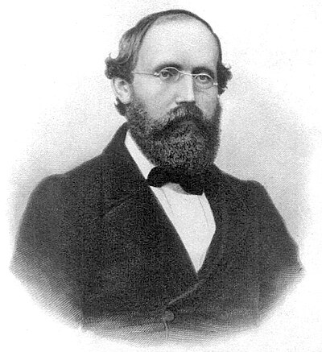
Bernhard Riemann 1826- Dedekind cuts
- Real number construction
- Density versus completeness
- Classification of finitely generated abelian groups
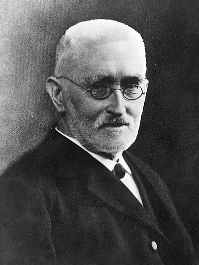
Richard Dedekind 1831- Continuous function with divergent Fourier series (1876)
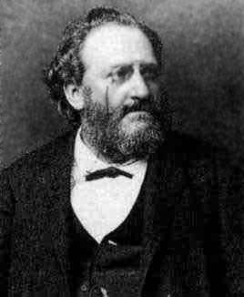
Paul du Bois-Reymond 1831- Cauchy-Lipschitz theorem (Picard-Lindelöf)
- Lipschitz condition for ODE uniqueness
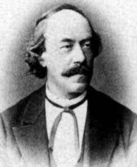
Rudolf Lipschitz 1832- Partial converse of Lagrange's theorem
- The Sylow theorems (1872)
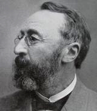
Ludwig Sylow 1832- Singular value decomposition (co-discoverer, 1873)
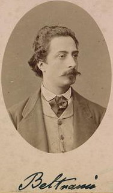
Eugenio Beltrami 1835- Jordan normal form (1870)
- Jordan curve theorem
- Isomorphism theorems (precursor)
- Singular value decomposition (co-discoverer, 1874)
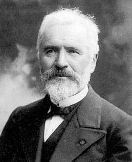
Camille Jordan 1838- Gibbs phenomenon
 J. Willard Gibbs
1839
J. Willard Gibbs
1839
- Arzelà–Ascoli theorem (equicontinuity)
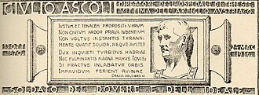
Giulio Ascoli 1843- Cauchy–Schwarz inequality (integral form)
- Schwarz's theorem (equality of mixed partial derivatives)
 Hermann Schwarz
1843
Hermann Schwarz
1843
- Cauchy sequence construction of the reals
- Construction of ℝ from ℚ via Cauchy sequences
- Point-set topology: open and closed sets
- Cauchy sequence completion of metric spaces
 Georg Cantor
1845
Georg Cantor
1845
- Arzelà–Ascoli theorem
 Cesare Arzelà
1847
Cesare Arzelà
1847
- First rigorous proof of Cayley–Hamilton (1878)
- Extended Sylow theorems to abstract groups
- Classification of finitely generated abelian groups (with Stickelberger, 1879)
 Ferdinand Georg Frobenius
1849
Ferdinand Georg Frobenius
1849
- Matrix exponential and qualitative theory of ODEs
- Poincaré-Bendixson theorem
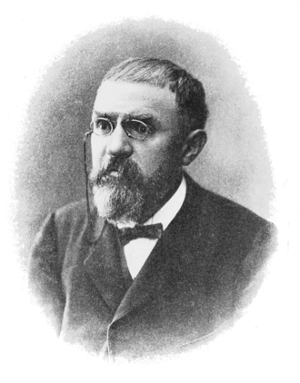
Henri Poincaré 1854- Markov’s inequality
 Andrey Markov
1856
Andrey Markov
1856
- Picard iteration
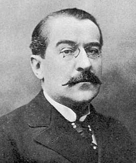
Émile Picard 1856- Lyapunov stability and Lyapunov's direct method
- Matrix exponential and stability of linear systems
 Aleksandr Lyapunov
1857
Aleksandr Lyapunov
1857
- Peano's counterexample
- Peano existence theorem for ODEs
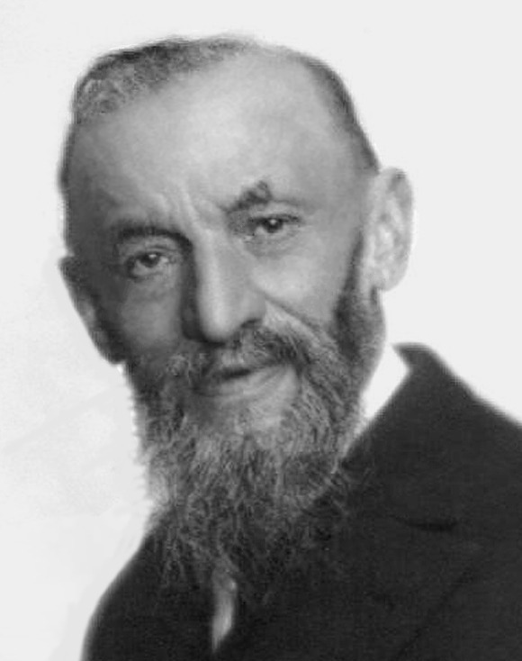
Giuseppe Peano 1858- Eigenvalue concept (named "Eigenwert")
- Projection as central idea in inner product spaces
- $\ell^2$ spaces
- Spectral theorem for compact self-adjoint operators (1904)
 David Hilbert
1862
David Hilbert
1862
- Cauchy–Hadamard formula for radius of convergence (1892)
- Stable manifold theorem (co-discoverer, 1901)
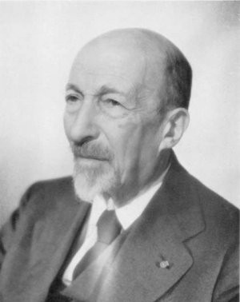
Jacques Hadamard 1865- Grundzüge der Mengenlehre (1914): systematised metric and topological spaces
- Axiomatisation of open sets
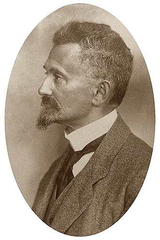
Felix Hausdorff 1868- Nim strategy (Bouton, 1901)
 Charles Bouton
1869
Charles Bouton
1869
- Heine–Borel theorem
- Borel–Cantelli lemma
- Strong law of large numbers (special case)
 Émile Borel
1871
Émile Borel
1871
- Steinitz exchange lemma
- Zermelo's theorem (1913)
 Ernst Zermelo
1871
Ernst Zermelo
1871
- Baire category theorem
 René Baire
1874
René Baire
1874
- Cantelli’s inequality (one-sided Chebyshev)
- Borel–Cantelli lemma
 Francesco Paolo Cantelli
1875
Francesco Paolo Cantelli
1875
- Riesz-Fischer theorem
- Courant-Fischer min-max theorem
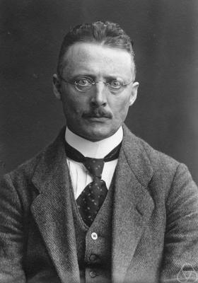
Ernst Fischer 1875- Lebesgue's generalisation of the Riemann integral
- Lebesgue number lemma
- Riemann-Lebesgue lemma and Lebesgue integration theory
- Measure theory as foundation for probability
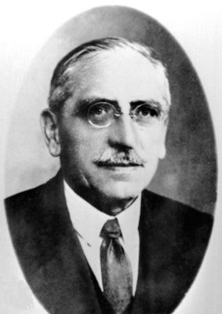
Henri Lebesgue 1875- Lindeberg condition for the CLT
 Jarl Lindeberg
1876
Jarl Lindeberg
1876
- Gronwall's inequality
 Thomas Gronwall
1877
Thomas Gronwall
1877
- Metric spaces (definition, 1906)
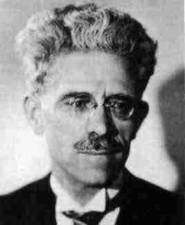
Maurice Fréchet 1878- Dual spaces and the concept of $X^*$
- Hahn–Banach theorem
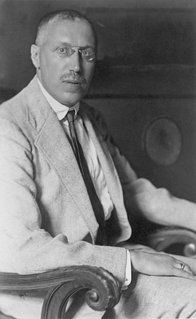
Hans Hahn 1879- Bernstein polynomials and constructive proof of Weierstrass approximation
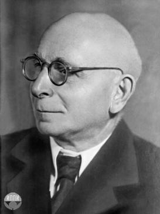
Sergei Bernstein 1880- Cesàro means of Fourier series
- Fejér's theorem and the Fejér kernel
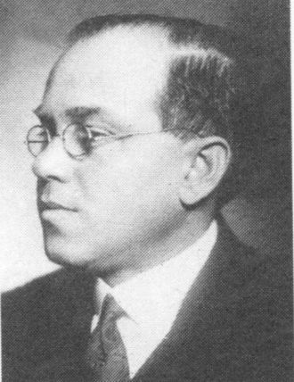
Lipót Fejér 1880- Riesz-Fischer theorem
- Introduction of the abstract norm (1918)
- Riesz's lemma and finite-dimensional characterisation
- Continuity equals boundedness for linear maps
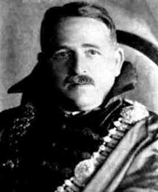
Frigyes Riesz 1880- Brouwer's fixed-point theorem
- Brouwer's fixed-point theorem
- Isomorphism theorems
- Structure theorem for finitely generated abelian groups
- Abstract ring theory
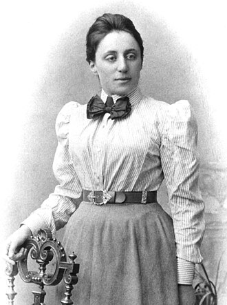
Emmy Noether 1882- Generalisation of the Central Limit Theorem
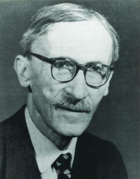
Paul Lévy 1886- Coined the name “Central Limit Theorem”
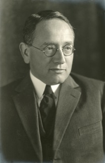
George Pólya 1887- Banach–Steinhaus theorem (uniform boundedness principle)
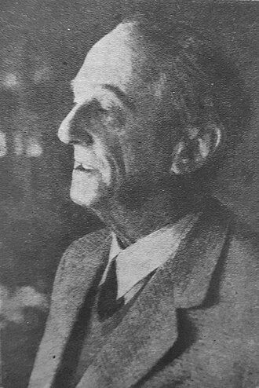
Hugo Steinhaus 1887- Courant-Fischer min-max theorem
- Coined the term “variance”
 Ronald Fisher
1890
Ronald Fisher
1890
- Banach fixed point theorem
- Banach spaces (definition and theory)
- Banach–Steinhaus theorem (uniform boundedness)
- Open mapping theorem
 Stefan Banach
1892
Stefan Banach
1892
- Sprague–Grundy theorem (1935)
 Roland Sprague
1894
Roland Sprague
1894
20th Century (1900–2000)
- Theory of Games and Economic Behavior (1944)
 Oskar Morgenstern
1902
Oskar Morgenstern
1902
- Everywhere divergent Fourier series (1926)
- Kolmogorov axioms for probability (1933)
- Kolmogorov's strong law of large numbers
- Axiomatic foundation for conditional expectation
 Andrey Kolmogorov
1903
Andrey Kolmogorov
1903
- Minimax theorem (1928)
- Game trees and strategic form
- Von Neumann–Jordan theorem (1935)
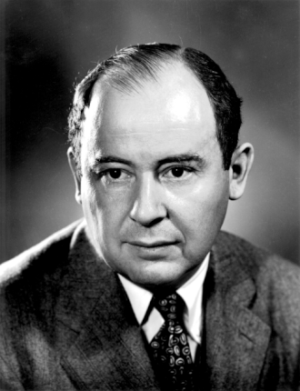
John von Neumann 1903- Martingale theory and conditional expectation
- Kakutani's fixed-point theorem (1941)
- Kakutani's fixed-point theorem (1941)
 Shizuo Kakutani
1911
Shizuo Kakutani
1911
- Vickrey (second-price) auction (1961)
- Second-price auction example
 William Vickrey
1914
William Vickrey
1914
- Sprague–Grundy theorem (1939)
 Patrick Grundy
1917
Patrick Grundy
1917
- Games of incomplete information
 John Harsanyi
1920
John Harsanyi
1920
- Arrow's impossibility theorem (1951)
- Carleson's theorem
 Lennart Carleson
1928
Lennart Carleson
1928
- Nash equilibrium existence theorem (1950)
- Nash equilibrium refinements
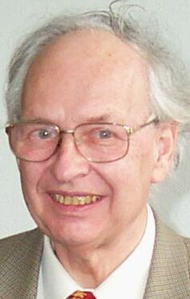
Reinhard Selten 1930- Combinatorial game algebra (1976)
 John H. Conway
1937
John H. Conway
1937
- Computer tournaments and tit-for-tat (1984)
 Robert Axelrod
1943
Robert Axelrod
1943
- Fermat's Last Theorem (1995)